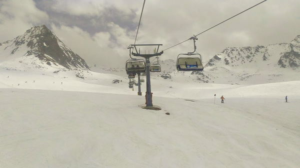
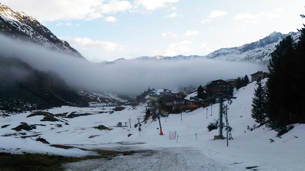

Large-scale semantic processing and strong computer assistance of mathematics and science is our inevitable future. New combinations of AI and reasoning methods and tools deployed over large mathematical and scientific corpora will be instrumental to this task. The AITP conference is the forum for discussing how to get there as soon as possible, and the force driving the progress towards that.
There will be several focused sessions on AI for ATP, ITP and mathematics, modern AI and big-data methods, and several sessions with contributed talks. The focused sessions will be based on invited talks and discussion oriented.
| Wolfgang Bibel | Darmstadt University of Technology |
| Kevin Buzzard | Imperial College London |
| Ben Goertzel | SingularityNET |
| Georges Gonthier | INRIA |
| Thomas C. Hales | University of Pittsburgh |
| Sean Holden | University of Cambridge |
| Mikoláš Janota | University of Lisbon |
| Chris Kapulkin | University of Western Ontario |
| Michael Kinyon | University of Denver |
| Angeliki Koutsoukou-Argyraki | University of Cambridge |
| Ramana Kumar | DeepMind |
| Sarah Loos | Google Research |
| David McAllester | Toyota Technological Institute at Chicago |
| Tomáš Mikolov | Facebook AI Research |
| Scott Morrison | Australian National University |
| Arnold Neumaier | University of Vienna |
| Adam Pease | Infosys |
| Joao Marques Silva | University of Lisbon |
| Martin Suda | Czech Technical University in Prague |
| Ilya Sutskever | OpenAI |
| Christian Szegedy | Google Research |
| Haniel Barbosa, Jasmin Christian Blanchette, Mathias Fleury, Pascal Fontaine and Hans-Jörg Schurr: Better SMT Proofs for Easier Reconstruction |
| Luis Berlioz: Project Proposal: Creating a Database of Definitions From Large Mathematical Corpora |
| Lasse Blaauwbroek: Tactic Learning for Coq |
| Chad Brown, Thibault Gauthier and Josef Urban: Translating from Higher-Order to Higher-Order |
| David Cerna: Towards A New Type of Prover: On the Benefits of Discovering Sequences of ``Related'' Proofs |
| Jasmin Christian Blanchette, Daniel El Ouraoui, Pascal Fontaine and Cezary Kaliszyk: Machine learning for instance selection in SMT solving |
| Karel Chvalovský, Thibault Gauthier and Josef Urban: First Experiments with Data Driven Conjecturing |
| Yassmeen Elderhalli, Osman Hasan and Sofiene Tahar: Using Machine Learning to Minimize User Intervention in Theorem Proving based Dynamic Fault Tree Analysis |
| Steffen Frerix and Peter Koepke: Making Set Theory Great Again: The Naproche-SAD Project |
| Thibault Gauthier and Josef Urban: Arithmetical Mini-Games |
| Edvard Holden and Konstantin Korovin: SMAC and XGBoost your Theorem Prover |
| Jan Jakubuv and Josef Urban: Clause Features for Theorem Prover Guidance |
| Robert Kahlert, Bettina Berendt and Benjamin Rode: Beyond Surface Event Representation |
| Alexei Lisitsa: Automated Reasoning for the Andrews-Curtis Conjecture |
| Dennis Müller, Florian Rabe and Michael Kohlhase: How to Leverage a Large Dataset of Formalized Mathematics with Machine Learning? |
| Yutaka Nagashima: Towards Machine Learning Induction |
| Julian Parsert, Stephanie Autherith and Cezary Kaliszyk: Teaching the Structure of First-order Formulas to Neural Networks |
| Adam Pease: Arithmetic and Inference in a Large Theory |
| Bartosz Piotrowski, Chad Brown, Josef Urban and Cezary Kaliszyk: Can Neural Networks Learn Symbolic Rewriting? |
| Michael Rawson and Giles Reger: Towards an Efficient Architecture for Intelligent Theorem Provers |
| Giles Reger and Martin Suda: Can a Failed Strategy be Useful? |
| Aleksandra Samonek: Focusing proofs and logics for models of computation |
| Martin Smolík and Josef Urban: Project Proposal: Neural Modelling of Mathematical Structures |
| Robert Veroff, Josef Urban and Michael Kinyon: Hint Selection and Prioritization |
| Qingxiang Wang, Cezary Kaliszyk and Josef Urban: Exploration of Machine Translation Techniques in Auto-formalization of Mathematics: Experiment Proposal |
| Sarah Winkler: Maedmax at School: Learning Selection in Equational Reasoning |
| Zsolt Zombori, Adrián Csiszárik, Henryk Michalewski, Cezary Kaliszyk and Josef Urban: Curriculum Learning and Theorem Proving |
The (extended) abstracts of all the invited and contributed talks are now available online.
| Jasmin Christian Blanchette | INRIA Nancy |
| Ulrich Furbach | University of Koblenz |
| Thomas C. Hales (co-chair) | University of Pittsburgh |
| Sean Holden | University of Cambridge |
| Mikoláš Janota | University of Lisbon |
| Moa Johansson | Chalmers University |
| Cezary Kaliszyk (co-chair) | University of Innsbruck |
| Michael Kohlhase | FAU Erlangen-Nürnberg |
| Konstantin Korovin | The University of Manchester |
| Ramana Kumar (co-chair) | DeepMind |
| Claudio Sacerdoti Coen | University of Bologna |
| David McAllester | Toyota Technological Institute at Chicago |
| Adam Pease | Infosys |
| Stephan Schulz (co-chair) | DHBW Stuttgart |
| Geoff Sutcliffe | University of Miami |
| Christian Szegedy | Google Research |
| Josef Urban (co-chair) | Czech Technical University in Prague |
| 13:00-15:00 | lunch and check-in |
| 15:00-16:30 |
Welcome Ben Goertzel Is Meta-learning for Theorem-Proving One of the Keys to Artificial General Intelligence? (abstract) Tomas Mikolov Deep learning: Challenges in learning and generalization (abstract) |
| 16:30-17:00 | coffee break |
| 17:00-18:50 |
Bartosz Piotrowski, Chad Brown, Josef Urban and Cezary Kaliszyk Can Neural Networks Learn Symbolic Rewriting? (abstract) Julian Parsert, Stephanie Autherith and Cezary Kaliszyk Teaching the Structure of First-order Formulas to Neural Networks (abstract) Yutaka Nagashima Towards Machine Learning Induction (abstract) Zarathustra Goertzel and Josef Urban Usefulness of Lemmas via Graph Neural Networks (abstract) |
| 19:00 | dinner |
| 8:30-10:05 |
Michael Kinyon, Robert Veroff and Josef Urban Hint Selection and Prioritization (abstract) Alexei Lisitsa Automated Reasoning for the Andrews-Curtis Conjecture (abstract) Yassmeen Elderhalli, Osman Hasan and Sofiene Tahar Using Machine Learning to Minimize User Intervention in Theorem Proving based Dynamic Fault Tree Analysis (abstract) |
| 10:05-10:35 | coffee break |
| 10:35-12:00 |
Jan Jakubuv and Josef Urban Clause Features for Theorem Prover Guidance (abstract) Martin Suda Neural ENIGMA Karel Chvalovský, Thibault Gauthier and Josef Urban First Experiments with Data Driven Conjecturing (abstract) |
| 12:00-17:15 | free time |
| 17:15-18:45 |
panel & AITP Discussion |
19:00 | dinner |
| 8:30-10:00 |
Thomas Hales Mathematical Definitions, Formally Speaking (abstract) Kevin Buzzard, Christopher Hughes, Kenny Lau and Ramon Fernandez Mir Schemes in Lean (abstract) |
| 10:00-10:30 | coffee break |
| 10:30-12:00 |
Angeliki Koutsoukou-Argyraki Formalizing Mathematics-In Praxis: First Experiences with Isabelle/HOL (abstract) Steffen Frerix and Peter Koepke Making Set Theory Great Again: The Naproche-SAD Project (abstract) |
| 12:00-16:00 | free time |
| 16:00-16:30 | coffee break |
| 16:30-18:40 |
Luis Berlioz Project Proposal: Creating a Database of Definitions From Large Mathematical Corpora (abstract) Aleksandra Samonek Focusing proofs and logics for models of computation (abstract) short break Martin Smolík and Josef Urban Project Proposal: Neural Modelling of Mathematical Structures (abstract) Qingxiang Wang, Cezary Kaliszyk and Josef Urban Exploration of Machine Translation Techniques in Auto-formalization of Mathematics: Experiment Proposal (abstract) |
| 19:00 | dinner |
The conference will take place from April 7 to April 12 in the stunning scenery of the Tyrolean Alps in the Obergurgl Conference Center of the University of Innsbruck. The pictures of the rooms are here. Obergurgl is a picturesque village located at an altitude of 2000m, a 1-hour drive from Innsbruck. It offers a variety of winter-sport activities such as skiing, snowshoeing and hiking at this time of the year. The total price for accommodation in a twin room (based on 2-person occupancy), food (half-board) and registration for the five days will be around 670 EUR. There are also several hotels in Obergurgl - booking early is recommended.
If you stay in Innsbruck before/after the conference, we recommend the following hotels, we have good experience with
You can rent skis/snowboards/boots/helmets in Obergurgl or already in
Innsbruck. It might be hard to rent clothing in Obergurgl, but it is
possible in Innsbruck (e.g., here).
Ski+Boots rental per day:
30-50Euros per day (depending on the quality).
Obergurgl daily ski passes:
From noon: 40Euros.
From 11am: 45Euros.
3 days: 143Euros
Here are two photos from 2016 showing the skiing conditions
and the village (with the conference center hidden on the right side of
the photo) taken in April.
 
| We thank the University of Innsbruck for their support of the Obergurgl conference center. |
{kind=link}
{kind=link}